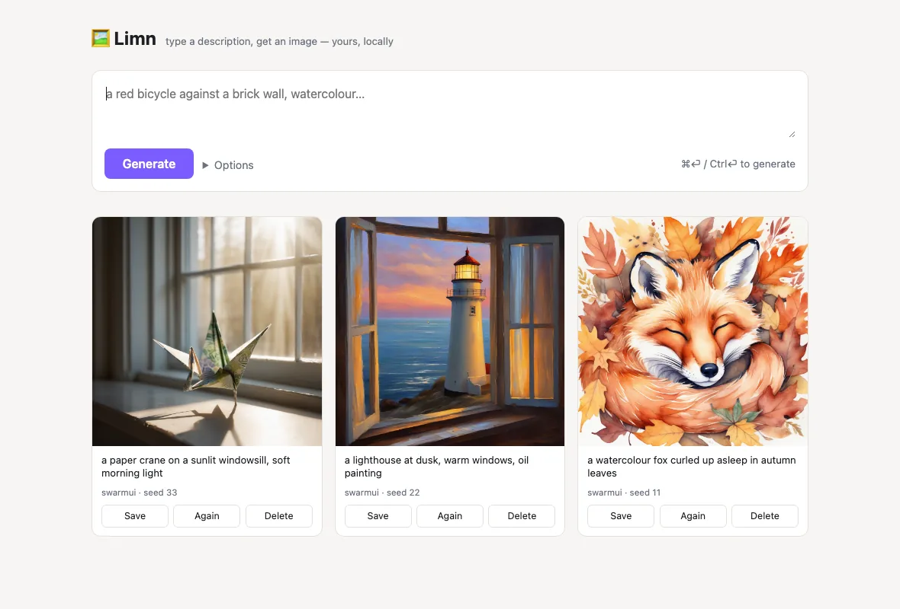
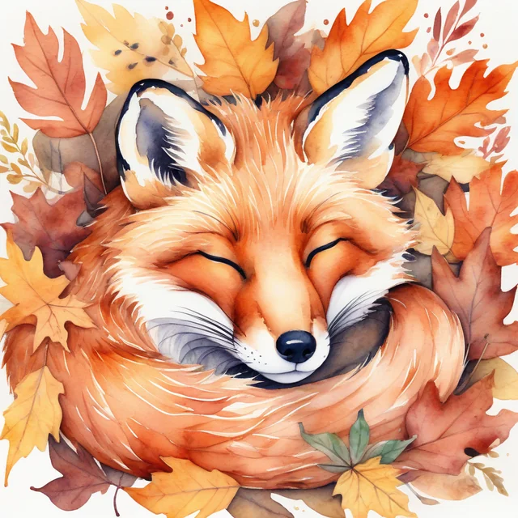

Limn is a small text-to-image tool that stays out of your way and out of your data. No account, no telemetry, no cloud lock-in — prompts go only to the image provider you choose, and every image lands on your own machine.
Free & open source (MIT) · ~2 MB installer · or pip install limn


A native desktop app for macOS, Windows and Linux. The installer is a couple of megabytes; on first launch it sets up a private Python runtime and you pick your image provider in Settings.
Builds are unsigned for now: on macOS, right-click the app and choose Open the first time; on Windows, pick More info → Run anyway. All releases are on GitHub.
The same engine is a Python package — a one-line CLI, plus a local web UI with a session gallery.
On PyPI · works with self-hosted SwarmUI, any OpenAI-compatible endpoint, OpenAI, or Google Imagen.
Most image tools are someone else's app around someone else's server. Limn is the simplest possible "text → image" surface that you own.
Nothing to sign up for, nothing phones home. The only network traffic is the generation request to the provider you configured.
Point it at your self-hosted SwarmUI, any OpenAI-compatible endpoint, or a cloud key (OpenAI, Google Imagen). Swap with one setting.
Images save straight to your disk. Minimal knobs — prompt, size, count, seed — because simple beats powerful.
A shared, rate-limited demo — a few images per hour, nothing stored, images vanish after a while. No install, no sign-up.